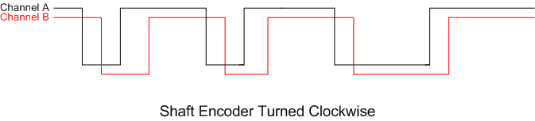

CPRE 288 Laboratory
Lab 3: Memory Mapped I/O
Lecture - Lab Connection
In lecture, you have studied memory mapped I/O and the concept of API (application programming interface) functions. The general purpose input/output pins (GPIO) are grouped into sets of 8 pins, called ports. You will use these concepts and the related skills to develop functionality that allows a person to interact with a running program through push buttons and a shaft encoder and control the motion of a stepper motor.
Prelab
- Read through the lab description, including the linked documents.
- Skim the reference documents below; in particular, you should skim pages 65-88 of the ATmega128 Datasheet, with a focus on understanding the bottom of page 66. In addition, read page 8 of the Shaft Encoder Datasheet.
- Read through the source code for util.c. It has been heavily commented to assist you.
- Print the Lab Evaluation Form.
Reference Documents
All reference documents are also available on the Resources page of the course website.
- (doc2467) ATmega128 Datasheet
- Shaft Encoder Datasheet
- Stepper Motor Datasheet
- Stepper Motor Product Sheet
Reference Files
Download the following files to a single folder your U: drive. (Right-click and select 'Save Target As')
- open_interface.c: The API functions for the most basic Open Interface functions
- open_interface.h: The header file for open_interface.c
- lcd.c: A program file with a number of LCD functions
- lcd.h: The header file for lcd.c
- util.c: This file contains functions which you must implement during this lab
- util.h: The header file for util.c
Notes
- Port C is used by the push buttons as well as the shaft encoder. To read data from this port, use the register PINC.
- The push buttons on Port C are active low. For example, if SW3 button is not pushed, the corresponding bit (i.e. PC2) within the byte from PINC will be a value of 1. If it is pushed, the corresponding bit is 0. This push button circuit is designed to pull the appropriate MCU pin low by making contact to ground.
Part 1. Push Buttons
Requirements - Implement the read_push_buttons() function in util.c and display the currently pressed button on the LCD screen.
In this part, you will complete an API function for the push buttons on the LCD display board. The function read_push_buttons() in util.c is currently unimplemented. Write code in the function such that it returns the position of the button being pressed. For example, the position of the leftmost push button on the board, labeled as SW6, is 6. If multiple buttons are being pushed, the function should only return the index of the leftmost button and ignore the other buttons. If no button is pushed, 0 should be returned.
The function prototype has been written in util.c. Additionally, there are comments on which port is associated with the push buttons. Complete the function body of read_push_buttons().
You will also need to write a program continually calls read_push_buttons() and displays the result on the screen. Do not forget about the initialization functions! Here's an example of such a program:
#include "lcd.h"
#include "util.h"
void main() {
lcd_init();
init_push_buttons();
while(1) { // loop indefinitely
char button = read_push_buttons();
lprintf("Button: %d", button);
}
}
If you have completed this section of the lab within the first 30 minutes of lab, move on to Part 2. The parts of the lab are cummulative, and demoing the last part to the TA is sufficient for receiving all points. If you think you will fail to complete the entire lab within the lab period, you may demo this part to your TA for partial credit and demo the remaining parts at the beginning of your next lab session.
Part 2. Shaft Encoder
Requirements - Implement the read_shaft_encoder() function in util.c. Modify your program from part 1 to display both the currently pressed push button and a sum of the return values from read_shaft_encoder() on the LCD screen.
The shaft encoder is a human input device that is primarily used to allow a user to increment or decrement a value (such as the volume on a stereo). The shaft encoder selected for the VORTEX platform has no absolute position. What can be known is whether the shaft encoder has been turned clockwise or counter-clockwise. The shaft encoder used in our lab is a mechanical shaft encoder. There are essentially two switches that close and open in an order dependent upon the direction of rotation. The shaft encoder is wired to the Port C pins PC6 (for channel A) and PC7 (for channel B) of the MCU, so that each internal switch is either monitored by PC6 or by PC7. As each of the internal switches closes, the switch pulls the respective MCU pin low to ground. An open switch results in a high voltage (5 V or so) on the respective MCU pin. The result of the alternating voltages is a square wave, but since the two waveforms lag or lead the other by a phase angle these signals are said to be quadrature signals. Traditionally these signals were called quadrature signals for the phase angle between was commonly 90 degrees. As the shaft is rotated clockwise channel A will lead channel B. As the shaft is rotated counter-clockwise channel B will lead channel A.
The objective of Part II is for your team to implement the function read_shaft_encoder() in util.c such that it will read the shaft encoder and return values according to the following rules:
- When the shaft is rotated clockwise return 1
- When the shaft is rotated counter-clockwise return -1
- When the shaft is not rotated return 0
The function prototype is already present in util.c and in util.h. Much of the function has been written. It has incomplete statements that need your attention. No additional lines of code should be necessary.
Write a program that continually calls this function and keeps a sum of the return values from the function. If the shaft encoder is left alone, the sum should remain constant. If the shaft encoder is rotated, the sum will increase or decrease. Display the sum on the LCD display along with the currently pressed push button.
Warning! - Don't forget to call the proper initialization functions once at the beginning of your program. The function shaft_encoder_init() will initialize the ports correctly for the shaft encoder.
Using memory mapped I/O to determine the direction of rotation of the shaft encoder has timing challenges. Do not be overly concerned about supporting a wide range of rotation speeds. Work on rotation speeds that are comfortable and easy to maintain.
If you have completed this section of the lab within the first hour of lab, move on to Part 3. The parts of the lab are cummulative, and demoing the last part to the TA is sufficient for receiving all points. If you think you will fail to complete the entire lab within the lab period, you may demo this part to your TA for partial credit and demo the remaining parts at the beginning of your next lab session.
Part 3. Stepper Motor
Requirements - Implement the move_stepper_motor_by_step() function in util.c. Expand your program from part 2 so that it additionally rotates the stepper motor when the shaft encoder is rotated.
The unipolar stepper motor being used in this lab has 200 steps, which translates to 1.8 degrees of rotation per step. The stepper motor's rotation can be controlled by simply energizing the motor's windings in a sequence. The sequence order will define the direction of rotation. The control lines for the stepper motor have been wired to Port E on pins PE4-PE7. The driver chip expects positive logic whereby a 1 on one of the PE4-PE7 pins is translated into energizing the winding associated with that pin. Only one winding should be energized at one time for this lab. So motor control translates into shifting a bit value of 1 across the upper four bits of PORTE.
A function skeleton for move_stepper_motor_by_step() has been started in util.c. Normally a function like this would have three parameters (number of steps, direction, speed), but for now we will focus on two parameters. So for this part of the lab, complete the function so that the motor will turn the specified number of steps in the direction requested. A direction value of 1 should be interpreted to mean clockwise and -1 to mean counter-clockwise. In order for this function to move the stepper accurately each time it is invoked, the previous stepper energizing pattern needs to be known (i.e. the values PE4-PE7 need to saved) so that the first energizing pattern produced by the current function invocation does not cause the motor to skip step positions.
The stepper motor is being energized by a 14V supply, so the amount of power consumed relative to other components on the board is quite high. The power draw of the motor is minimized when the driver chip does not see a call for any windings to be energized (i.e. the output of PE4 through PE7 is low or logic 0). After having moved the motor into position, set pins PE4-PE7 to 0. This will make the motor susceptible to rotation by an external force for no holding torque will be generated, but for our current purposes that is acceptable. Your TA will verify that you have de-energized the motor during the lab demonstration.
After completing move_stepper_motor_by_step(), write a program that will couple the shaft encoder to the stepper motor. The objective of the program is to have the stepper move position as the shaft encoder is turned. The direction of rotation of the stepper should match that of the shaft encoder. There should be a one-to-one correspondence between steps moved and the number of positions the shaft encoder is turned. Before attempting to move the stepper motor, the stepper needs to be initialized by calling the stepper_init() function.
After completing the one-to-one correspondence coupling, you could try mapping absolute position of the stepper with the shaft encoder. There are 20 positions on the shaft encoder and 200 steps, so 10 steps of stepper movement would be needed for each shaft encoder move. You are welcome to try other mappings between the shaft encoder and stepper.
Demo your program to your TA.
Cautions
Never leave a powered-down JTAGICE mkII connected to a powered robot - current may leak from the unit and result in damage to the emulator. Try to leave the blue JTAGICE mkII box powered on at all times.
Turn the power to the Cerebot board and iRobot off before charging. The Cerebot board consumes power and the battery will not charge if the robot is in full_mode (which it enters after calling oi_init, turing the power LED yellow). The robot is charging when the robot's power LED is pulsing red and both green LEDS on the dock are lit.
Reference Files
| Files | Description |
|---|---|
| Shaft Encoder Datasheet | Information on how the shaft encoder works |
| Stepper Motor Datasheet | Information on how the stepper motor works |
| Stepper Motor Product Sheet | A short product summary |
| Lab Evaluation Form | Evaluation form for Lab |
| Online Feedback Form | Tell us what you think of the lab (feedback forms) |